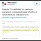

<!DOCTYPE html>
<html lang="en">
 <head>
  <meta charset="utf-8"/>
  <title>
   John Podesta had no problem making an example out of a suspected Leaker..We know Johny, We Know...Matt Couch and Team Investigating #SethRichMurder.
  </title>
  <meta content="Post on /v/Pizzagate archived on 2017-07-15 by pierrebezukhov." name="description"/>
  <meta content="John Podesta had no problem making an example out of a suspected Leaker..We know Johny, We Know...Matt Couch and Team Investigating #SethRichMurder." property="og:title"/>
  <meta content="Post on /v/Pizzagate archived on 2017-07-15 by pierrebezukhov." property="og:description"/>
  <link href="../../page.css" rel="stylesheet"/>
  <meta content="https://voat.pizzagate.hackliberty.org/thumbnails/28/1a/281ac487-9543-4c56-bc7b-9c61caf204e4.jpg" property="og:image"/>
  <meta content="https://voat.pizzagate.hackliberty.org/v/pizzagate/1999357.html" property="og:url"/>
  <meta content="width=device-width, initial-scale=1" name="viewport"/>
  <link href="https://voat.pizzagate.hackliberty.org/1999357.html" rel="canonical"/>
  <meta content="article" property="og:type"/>
  <meta content="Voat /v/Pizzagate Archive" property="og:site_name"/>
  <meta content="en_US" property="og:locale"/>
  <meta content="summary_large_image" name="twitter:card"/>
  <meta content="John Podesta had no problem making an example out of a suspected Leaker..We know Johny, We Know...Matt Couch and Team Investigating #SethRichMurder." name="twitter:title"/>
  <meta content="Post on /v/Pizzagate archived on 2017-07-15 by pierrebezukhov." name="twitter:description"/>
  <meta content="https://voat.pizzagate.hackliberty.org/thumbnails/28/1a/281ac487-9543-4c56-bc7b-9c61caf204e4.jpg" name="twitter:image"/>
 </head>
</html>
<body class="dark">
 <div id="container">
  <!-- array (
  'submissionid' => 1999357,
  'creationDate' => '2017-07-15 17:29:18',
  'domain' => 'twitter.com',
  'formattedContent' => NULL,
  'isAdult' => 0,
  'isAnonymized' => 0,
  'subverse' => 'pizzagate',
  'thumbnail' => '281ac487-9543-4c56-bc7b-9c61caf204e4.jpg',
  'title' => 'John Podesta had no problem making an example out of a suspected Leaker..We know Johny, We Know...Matt Couch and Team Investigating #SethRichMurder.',
  'url' => 'https://twitter.com/RealMattCouch/status/886040133153304581',
  'userName' => 'pierrebezukhov',
  'archivedLink' => NULL,
  'archivedDomain' => NULL,
  'isDeleted' => 0,
) -->
  <div style="text-align:center; font-size:24px; font-weight:bold;">
   <a href="../../index.html" style="text-decoration: none; color: inherit;">
    Voat /v/Pizzagate Archive
   </a>
  </div>
  <div class="content" role="main">
   <div class="sitetable linklisting" id="siteTable">
    <div class="submission id-1999357 link type-text" id="submission-1999357">
     <a name="submissionTop">
     </a>
     <p class="parent">
     </p>
     <a class="thumbnail may-blank" href="https://twitter.com/RealMattCouch/status/886040133153304581" target="_self">
      
     </a>
     <div class="entry unvoted">
      <p class="title">
       <a class="title may-blank" href="https://twitter.com/RealMattCouch/status/886040133153304581" tabindex="1" target="_self" title="John Podesta had no problem making an example out of a suspected Leaker..We know Johny, We Know...Matt Couch and Team Investigating #SethRichMurder.">
        John Podesta had no problem making an example out of a suspected Leaker..We know Johny, We Know...Matt Couch and Team Investigating #SethRichMurder.
       </a>
       <span class="domain">
        (
        <a href="https://archive.searchvoat.co/search.php?d=twitter.com">
         twitter.com
        </a>
        )
       </span>
      </p>
      <p class="tagline">
       submitted
       <time datetime="2017-07-15T17:29:18+00:00" title="07/15/2017 5:29:18 PM">
        2017-07-15T17:29:18
       </time>
       by
       <span class="userattrs">
        <a class="author may-blank" href="https://archive.searchvoat.co/search.php?u=pierrebezukhov">
         pierrebezukhov
        </a>
       </span>
      </p>
      <ul class="flat-list buttons">
       <li class="first">
        <a class="comments may-blank" href="https://archive.searchvoat.co/v/pizzagate/1999357" rel="nofollow">
         1 comment
        </a>
       </li>
      </ul>
     </div>
     <div class="child">
     </div>
     <div class="clearleft">
     </div>
    </div>
    <div class="clearleft">
    </div>
   </div>
   <div class="horizontal-line">
   </div>
   <div class="commentarea">
    <div class="sitetable nestedlisting" id="siteTable">
     <div class="child id-9850919 comment even" style="">
      <div class="entry unvoted">
       <div class="noncollapsed" id="9850919" style=";">
        <p class="tagline">
         <a class="author may-blank" href="https://archive.searchvoat.co/search.php?u=derram">
          derram
         </a>
         <span class="userattrs">
         </span>
         <time datetime="2017-07-15T17:30:05+00:00" title="7/15/2017 5:30:05 PM">
          2017-07-15T17:30:05
         </time>
        </p>
        <div class="usertext-body may-blank-within" id="commentContent-9850919">
         <div class="md">
          <p>
           <p>
            <a href="https://tweetsave.com/realmattcouch/status/886040133153304581">
             https://tweetsave.com/realmattcouch/status/886040133153304581
            </a>
            :
           </p>
           <blockquote>
            <p>
             Matt Couch on Twitter: "John Podesta had no problem making an example out of a suspected Leaker.. We know Johnny, We Know... #SethRich  t.co/MQXbeJCJVf"
            </p>
           </blockquote>
           <p>
            <a href="https://vgy.me/VozQ7Z.png">
             This has been an automated message.
            </a>
           </p>
          </p>
         </div>
        </div>
        <ul class="flat-list buttons">
         <li class="first">
          <a class="bylink" href="https://archive.searchvoat.co/v/pizzagate/1999357/9850919" rel="nofollow">
           link
          </a>
         </li>
        </ul>
       </div>
      </div>
     </div>
    </div>
   </div>
  </div>
 </div>
 <div class="footer-container">
 </div>
</body>
